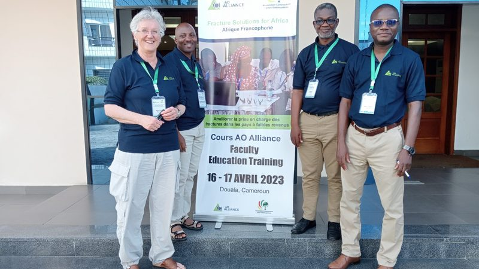
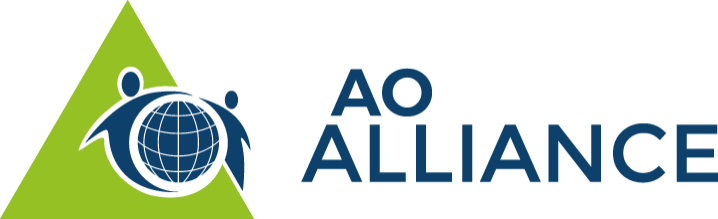
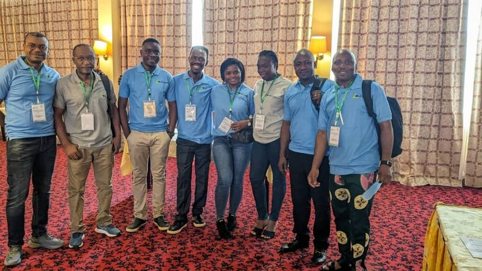
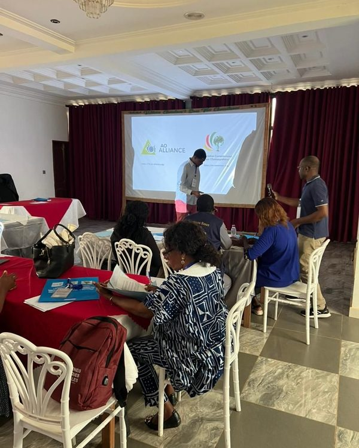
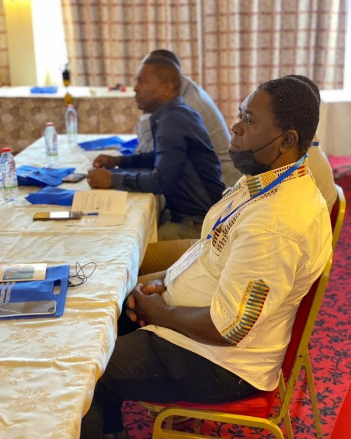
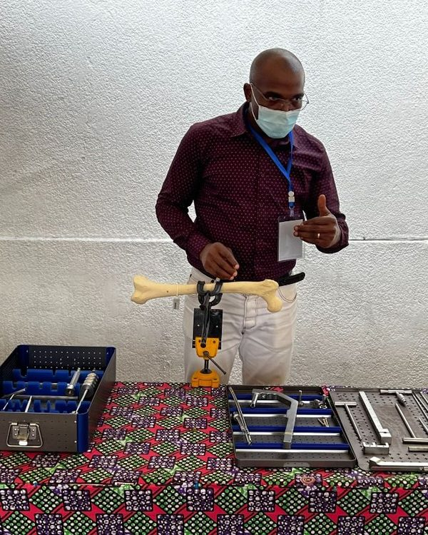
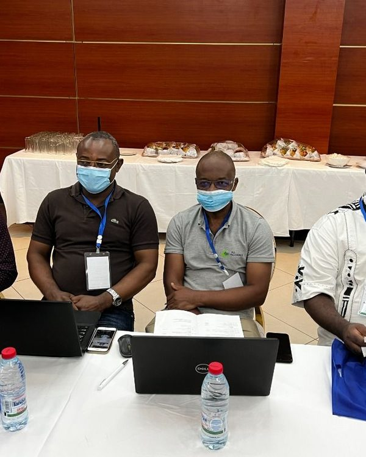
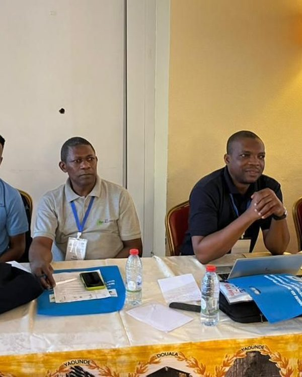
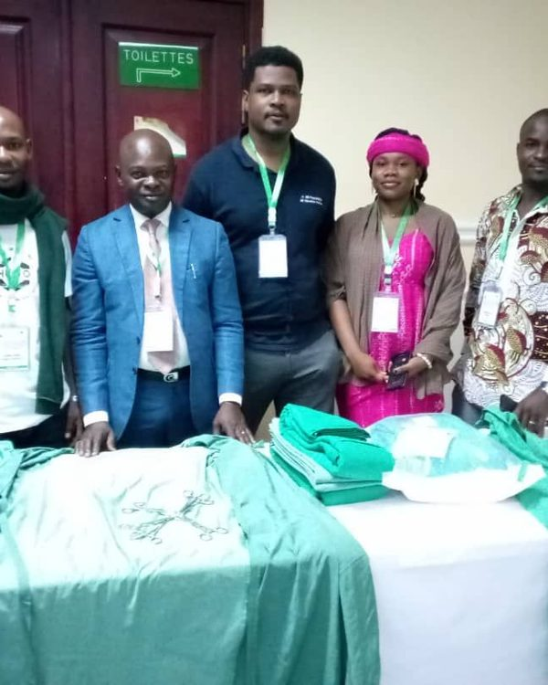
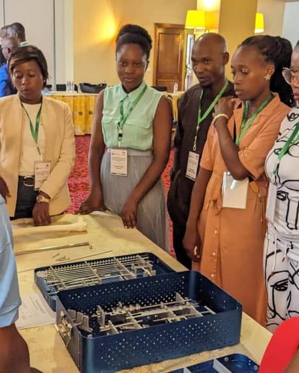

Association Camerounaise pour l’Ostéosynthèse
Notre mission est d’établir en permanence des standards en matière de formation médicale continue.
Notre mission
Favoriser les échanges des connaissances médicales validées par l’intermédiaire d’un réseau mondial de professionnels de santé dans le but d’améliorer les soins aux patients victimes de traumatismes du système musculo-squelettique.
Sur le terrain : cours et séminaires, prise en charge des fractures au site central des soins de la Fondation Médicale André Fouda à Yaoundé, et Registre Camerounais de Traumatologie.

Quelques évènements
Cours AOA—Principes du Traitement Non Opératoire des Fractures de Membres les plus Courantes, 07-09 avril, Douala.
Séminaire de Formation des Enseignants pour PBO, 16-17 avril, Douala.
Campagne de santé AO Alliance-AO Cameroun, 7e édition à Mbalmayo : interventions chirurgicales du 18 au 23 novembre.
Séminaire—Standards Péri Opératoires au Bloc Opératoire de Traumatologie, 08 novembre, Yaoundé.
Dates issues des pages « Galerie photo » et « Prise en charge des fractures ».
Bureau et correspondants
Ce que fait l’association
Cours et séminaires
Cours Non Opératoire, Cours Opératoire, séminaires de traumatologie pour chirurgiens et pour PBO, séminaires d’information, éducation et communication.
Prise en charge des fractures
Fractures pédiatriques, fermées, ouvertes, complications, fractures négligées et séquelles, au site central des soins de la Fondation Médicale André Fouda.
Archives
Galerie photo des évènements 2022, 2023 et 2024 et rapports d’activités annuels 2020, 2021 et 2022.
AO Alliance (AOA)
Les cours et séminaires de l’AOA sont organisés avec l’Association Camerounaise pour l’Ostéosynthèse (ACO).

Cours AOA—Principes du Traitement Non-Opératoire des Fractures de Membres les plus Courantes, séminaires AOA—Instruments et Implants pour l’Ostéosynthèse par clou centromédullaire, plaques et vis.
Siège de l’AO Alliance : Clavadelerstrasse 8, 7270 Davos-Suisse . Courriel : info@ao-alliance.org.
www.ao-alliance.orgClavadelerstrasse 8, 7270 Davos-Suisse.
Chirurgie Générale et Traumatologie, secrétaire exécutif de l’AO Cameroun — lekina@gmx.net.
BP : 3398 Messa, Yaoundé-Cameroun — contact@ao-cameroun.org.
Rapports et programmes
Partenaires et sites de soins
Nos formations
Cours Non Opératoire, Cours Opératoire, Séminaires de Traumatologie pour Chirurgiens et pour PBO, Séminaires d’Information, Éducation et Communication.
Cours Non Opératoire
Destiné au personnel médical des services d’accueil et des urgences et aux étudiants de médecine en fin de formation.
Cours Opératoire
Destiné aux médecins généralistes, aux résidents de chirurgie et aux chirurgiens.
Séminaires de traumatologie
Pour les chirurgiens et résidents, et pour les personnels de bloc opératoire (PBO).
Séminaires IEC
Pour les agents de santé communautaire, les communicateurs sociaux et les personnalités ressources.

Les enseignants · Yaoundé, 11 mai 2024Nos enseignants
Les enseignants lors des cours et séminaires de l’AO Cameroun, tels que présentés dans la galerie photo du site.







Photographies de la galerie photo du site — les noms des enseignants n’y figurent pas.